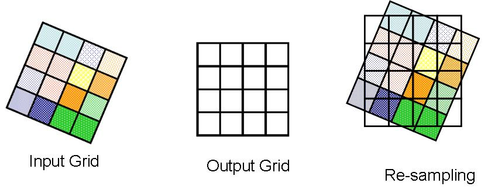

3 Corrections and Enhancements
3.1 Summary
Raw data from sensors are rarely immediately usable without being corrected for various interferences and effects. Common correction methods are geometric and topographic corrections and radiometric and atmospheric corrections. Finally, enhancement methods help us highlight values of interest that pertain to our research scope.
3.1.1 Radiometric and Atmospheric corrections
These processes describe translating raw light data from the sensor into ‘true’ information on the surface’s reflectance property without interference from the light source and the atmosphere.
Radiometric calibration is the conversion from raw Digital Number (raw, no units) to Spectral Radiance via a linear transformation \(L_λ=Bias+(Gain∗DN)\). Radiance most often has units of watt/(steradian/square meter)
Atmospheric correction is the next step:
TOA Radiance-to-Reflectance correction removes the effects of the light source (e.g. the sun) by calibrating radiation going down (irradiance) and up (radiance). TOA Reflectance still affects the atmosphere and the surface material. If irradiance is equal to radiance, we call this hemispheric reflectance.
TOA-to-BOA Reflectance correction removes the effects of the atmospheric conditions, leaving us with just data on the surface materials. If shadows and directional effects on reflectance have been dealt with, we get what is called true reflectance; if not, it is called apparent reflectance.
Atmospheric correction deserves our attention, considering the effect of atmospheric scattering on the final results. Absorption and scattering create the haze, which reduces the contrast and can create the “adjacency effect”, whereby radiance from pixels nearby is mixed into pixels of interest. Atmospheric correction to obtain actual reflectance is not always necessary, for example, for classifying a single image, working on composite images, etc. There are two types of atmospheric correction: -
Relative: normalise intensities of different bands within a single image or from many dates to one date. This can be done via Dark Object Subtraction (DOS) or Pseudo-invariant Features (PIFs).
Absolute: change digital brightness values into scaled surface reflectance. We can then compare these scaled surface reflectance values across the planet through atmospheric radiative transfer models (i.e. summer, tropical) or Empirical Line Correction.

3.1.2 Geometric and topographic corrections
These are subsets of Georectification, which gives coordinates to an image and accounts for view angle, topography, wind disturbance, Earth rotation, etc., distorting the resultant image’s geometry.
Topographic correction corrects the view angle of the image so that it is nadir (i.e., directly top-down). Important concepts to get familiar with for orthorectification are:
Solar azimuth: compass angle of the sun (N =0°) 90° (E) at sunrise and 270° (W) at sunset.
Solar zenith: angle of local zenith (above the point on the ground) and sun from vertical (90° - elevation)

Geometric correction effectively ‘grounds’ the images into a georeferenced final product (i.e., with a coordinate). We identify Ground Control Points (GPS) to match known points in the image and a reference dataset. We then model the coordinates to give geometric transformation coefficients (linear regression). It effectively resembles fitting old maps into a digital version.

3.1.3 Joining and Enhancements
To join (i.e., ‘mosaicking’), within the overlap area (20-30%), a representative sample is taken, a histogram is extracted from the base image, which is then applied to other images using a histogram matching algorithm to blend the brightness values of the two images (‘feathering’)
Finally, after all the corrections, there are still many enhancements that can improve or accentuate the visual results depending on the purpose of the research:
- Contrast enhancement to accentuate reflectance values that are close to each other
- Ratio calculation calculates pixel value as a ratio of different bands (e.g. Normalised Burn Ratio)
- Filtering is the use of low-pass filters that average (i.e., smooth) the data or high-pass filters that enhance the variances between features. Filtering is used to perform texture and edge detection.
- PCA transforms multi-spectral data into uncorrelated datasets. Multi-date overlay PCA is a way to detect change efficiently.
- Fusion entails fusing images/data from multiple sensors to improve details, enable better classification, or downsample.
3.2 Application
Despite having delved a lot into corrections, it is worth noting that standard remote sensing products now come corrected (Level-2, or “Analysis Ready Data”, ARD). In contrast, products derived from corrected ones are called Level-3. Research that works directly with Level-1 products often seeks to refine the correction methodology to transform them into ARDs (Coluzzi et al. 2018)
Enhancements made to ARD (i.e. Level-3 products) represent a proliferating field to survey, thanks to its wealth of innovative applications of a single or combinations of techniques, depending on the task at hand. According to recent research that made use of remote sensing data, there seem to be two main umbrella objectives researchers have when considering which enhancement methods to employ:
- Visualisation: Visual enhancement essentially accentuates the desired subject vs. other details. Contrast stretching to make images appear brighter is often done without much fanfare but is an essential step in using remote sensing data as an artefact perceptible in print to the human eyes. However, image enhancement using band ratio is widely used to highlight certain objects, with indices including NDVI, SAVI, etc., for Vegetation or NDWI, SWI, etc., for Water and Snow. A combination of indices can also be used to produce a composite ratio that can best visualise the desired study area, which was how Macedo et al. (2018) was able to map the holm oak above-ground biomass over a large area with different atmospheric conditions.
- Feature extraction: Many researchers seek to extract novel datasets from remote sensing data for various purposes, including training machine learning models to do the same (and better) for a larger region or globally. This objective is related to but ultimately distinguished from the above because the output is not a cartographic product but a dataset. The main difficulty when tackling this is to classify accurately (avoid false negatives and positives) while retaining the depth of information in each pixel. Li et al. (2022) proposed a pyramid feature extraction (PFE) to construct multi-scale representations of buildings, in which convolutional neural networks were applied on satellite images already gone through a combination of edge and texture detection, which were then again applied to subsequent output in the workflow.
3.3 Reflection
My initial knowledge of remote sensing was limited, but this exploration proved insightful and rewarding. The vast amount of information obtainable from raw multi-spectral data is impressive and somewhat little-appreciated outside of the geospatial community.
Therefore, democratising remote sensing data and technological advancements will empower research on Earth’s surface, surpassing local data collection, which is uneven and ununified by nature. Instead, remote sensing can be performed globally if the correct adjustments for the atmosphere and enhancements to fit the objectives are made.
However, while this is an untapped data source, two hurdles must be overcome before it may be fully utilised.
Technical competence: Remote sensing is jargon-filled, with each discipline adopting its best practice to harness the data, making the barrier to entry higher than that of other types of data analysis work. Standardisation of industry-agnostic workflow and training may be vital to upskilling geospatial analysts to work more natively with remote sensing data.
Data access inequality: High-resolution EO data are mostly not free and reserved for governmental/military use. High-quality EO data (multispectral, high spatial resolution, frequent, etc.) also depends on localities. Sophisticated enhancement techniques may help bridge the gap by fusing existing datasets.